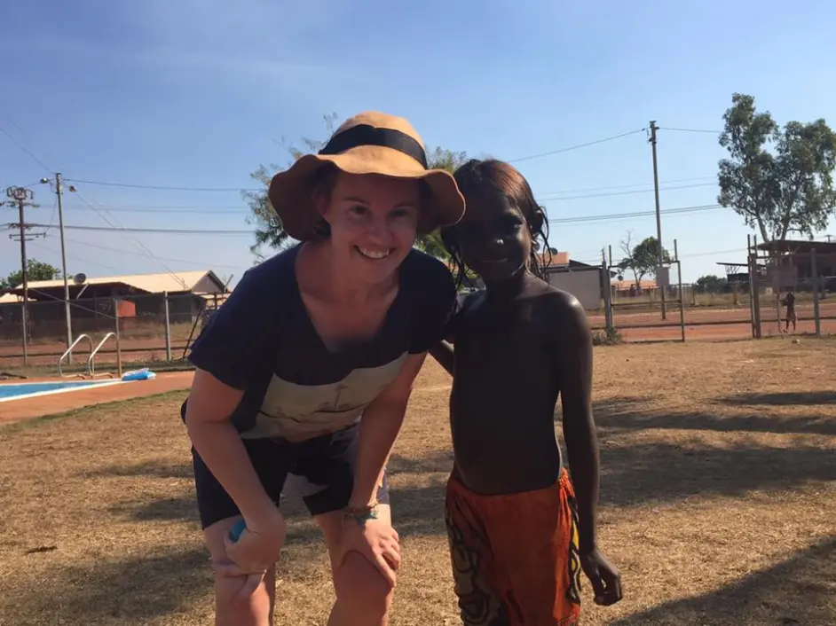
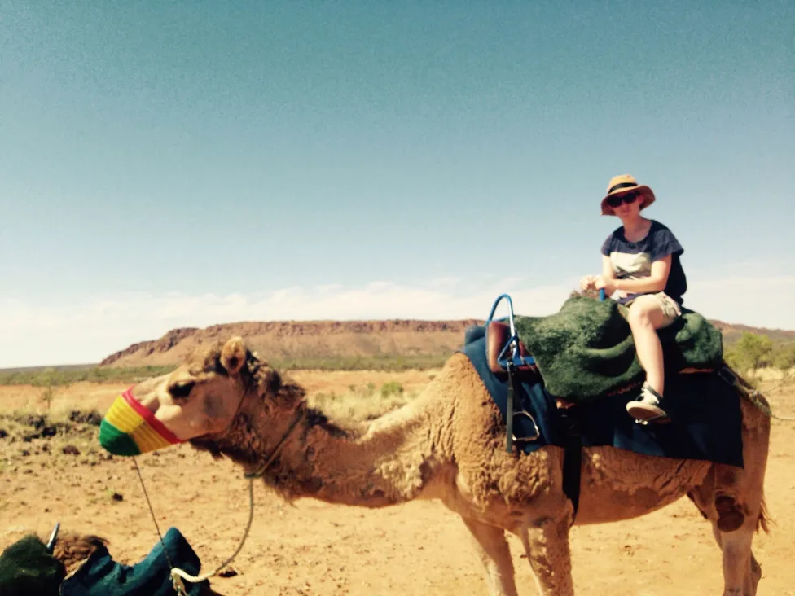
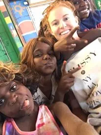
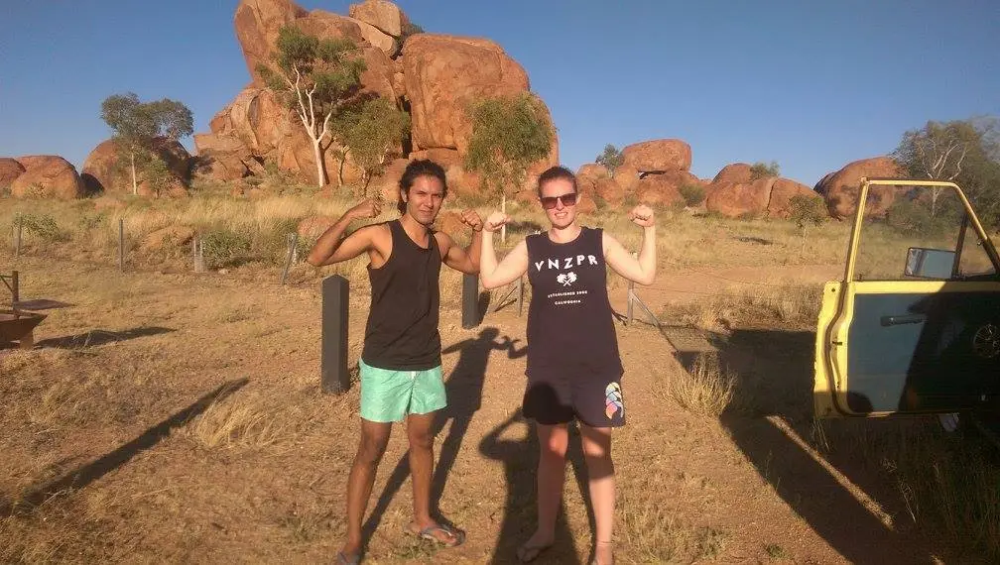
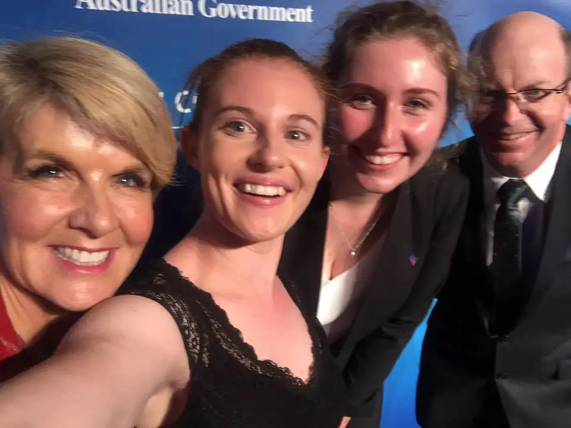
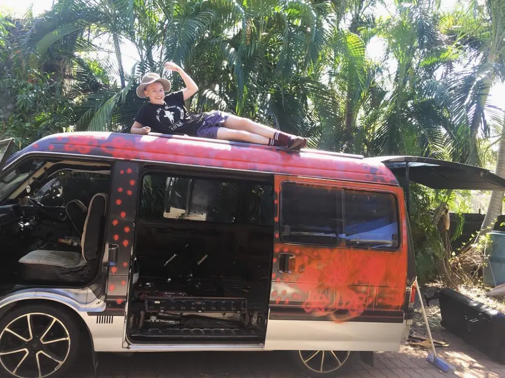

July 10, 2018
Aboriginal and Torres Strait Islander cultures hold a unique place in Australia. Theirs are some of the oldest in the world and we have much to understand for promoting equality and recognition to achieve reconciliation.
Katie Hicks is currently studying in Darwin, keen to grasp the history, culture and ongoing contribution of Aboriginal and Torres Strait Islander peoples to Australian life.
It was after a remote teaching placement that she decided to live in the Northern Territory, to learn as much as she possibly could about Indigenous culture.
We got in touch with her to find out what it's like living in remote communities, what the experience can teach and what the work involves.

Meet Doc, who offered Katie a lift back to Darwin.
What does your work with the Warlpiri Youth Development Aboriginal Corporation involve?
I was working as a youth development officer, based in Lajamanu, a very remote community about 660km south of Darwin (approximately an 11-hour drive). We provided both developmental and diversionary programs for young people aged 5-25, with the objective to provide alternatives to anti-social behaviour and substance abuse. Our programs involved sport, arts, media and culture.
Anyone who has worked in remote communities knows and understand the three M's. If you live in remote communities you are categorised by other “white people” as either a Misfit, a Mercenary or a Missionary. I don't think I fit into any category.
Because the three M's exist, it is important to not get 'stuck' or stay too long in remote communities. I have met a lot of people who have lived for years in communities in the Mercenary category. They came out to work in communities on huge wages and living rent free, so most are just paying off their mortgages or debts they have incurred down south. Then there are those who come out trying to save the world, trying to fix 'the problems'. And then there are the Misfits. Those who take the jobs no one else wants, those who struggle in mainstream society.
This, of course, leads to the huge staff turnover. There has always had a negative connotation attached to it ‐ people coming and going. So, these organisations need to maintain sustainability, but is their objective sustainable?
I am on the opposite end of this spectrum. I believe you should be moving on and around as much as possible. Learning all the different languages, customs and cultures that Indigenous Australia provides ‐ by not getting 'stuck' you are protecting your wellbeing, while enhancing your understanding and knowledge.
It is important to maintain a sense of reality and to not lose track of what's important ‐ move on!
I am in the process of moving to another community in Central Australia, doing similar work. I look forward to the challenge and learning as a much as possible.

Hanging with the students.
What has life in a remote community taught you?
Patience, adaptability, resilience and self-care. Developing these skills helps maintain endurance and sustainability. They are very important.
I also learned not to take things for granted. When I wasn't living in remote communities I always had access to fresh fruit and veg, I could eat out at restaurants and have my own space. Phone reception and the internet were always available and easily accessible. However, these things are just not as easy and sometimes impossible in remote communities. You learn to survive off frozen food, kangaroo tails and goannas, you don't rely on the internet or social media as much. Above all, your home is everyone's home. You need to be very adaptable and very, very patient.

Exploring the outback.
How do you handle the distance of remote communities?
Distance is a major challenge living in remote communities. Lajamanu was particularly challenging due to its extra remoteness. The closest town is Katherine (there is not much there) and it takes 8 hours to get there.
During the wet season, we can become completely cut off due to the floods. I've just learnt to learn new things - I do a lot of reading and writing and I try to head out bush when I can. Also, just staying in regular touch with my mates helped a great deal.

With Foreign Minister, the Hon. Julie Bishop. Awarded the New Colombo Plan scholarship for an overseas study experience.
What are the priorities of remote communities that we need to focus on?
To investigate housing opportunities more community consultations are needed. From my own observations, most Aboriginal people in remote communities use their houses as “storage spaces” while sleeping outside with little shelter. So if we want to provide shelter, how about we build proper storage spaces, build strong shelters, or provide the materials for this to happen.
Regarding health, if we are looking at closing the gap we need to implement programs that actually work. Again, with community consultations, Governments and community leaders need to be working together and they need to fully commit.
Education can be taught in the traditional language, taught by elders and taught in country. It can lead toward a language revitalisation.
How do you see an expansion of Indigenous knowledge systems and languages happening?
Currently, I think Indigenous knowledge systems and languages in Australia is retrogressive. I don't believe there will be any more advancement in this area unless governments, communities and organisations start investing more time and resources into the progression. Not enough is being done and I think the importance of maintaining languages and Indigenous Knowledge in an Australian context, is not fully appreciated or understood.
Where do you see your studies taking you?
My studies so far have taken me on a pretty incredible journey, here in Australia and overseas. I hope to finish my undergraduate degree next year, and continue onto a master's and maybe further…
On the road. Source: Katie Hicks.
This article was originally published on NowUC